Dashboards
Das IceHomeAssist-System verfügt über 11 YAML-basierte Dashboards, die verschiedene
Aspekte des Smart Homes abdecken. Alle Dashboards sind im YAML-Modus konfiguriert
und werden über separate Dateien im Verzeichnis dashboards/ verwaltet.
YAML-Modus vs. Storage-Modus
| Eigenschaft | YAML-Modus | Storage-Modus |
|---|---|---|
| Bearbeitung | Texteditor / Code | Grafischer Editor in der UI |
| Versionskontrolle | Ja (Git-kompatibel) | Nein (in .storage gespeichert) |
| Backup | Einfach (Dateikopie) | Nur über HA-Backup |
| Komplexität | Mehr Kontrolle, steile Lernkurve | Einfacher, aber eingeschränkter |
| Verwendung hier | Alle 11 Dashboards | Nicht verwendet |
Dashboard-Konfiguration
Einbindung in configuration.yaml
# configuration.yaml - Lovelace Dashboard-Konfiguration
lovelace:
mode: yaml
resources: []
dashboards:
home-dashboard:
mode: yaml
filename: dashboards/home.yaml
title: Home
icon: mdi:home
show_in_sidebar: true
energie-dashboard:
mode: yaml
filename: dashboards/energie.yaml
title: Energie
icon: mdi:solar-power
show_in_sidebar: true
wetter-dashboard:
mode: yaml
filename: dashboards/wetter.yaml
title: Wetter
icon: mdi:weather-partly-cloudy
show_in_sidebar: true
raeume-dashboard:
mode: yaml
filename: dashboards/raeume.yaml
title: Räume
icon: mdi:floor-plan
medien-dashboard:
mode: yaml
filename: dashboards/medien.yaml
title: Medien
icon: mdi:play-circle
staubsauger-dashboard:
mode: yaml
filename: dashboards/staubsauger.yaml
title: Staubsauger
icon: mdi:robot-vacuum
system-dashboard:
mode: yaml
filename: dashboards/system.yaml
title: System
icon: mdi:cog
thw-dashboard:
mode: yaml
filename: dashboards/thw.yaml
title: THW
icon: mdi:shield-alert
netzwerk-dashboard:
mode: yaml
filename: dashboards/netzwerk.yaml
title: Netzwerk
icon: mdi:lan
charly-dashboard:
mode: yaml
filename: dashboards/charly.yaml
title: Charly
icon: mdi:cat
kiosk-dashboard:
mode: yaml
filename: dashboards/kiosk.yaml
title: Kiosk
icon: mdi:tablet-dashboardDie 11 Dashboards
1. Home
Das Haupt-Dashboard mit einer Übersicht über alle wichtigen Informationen: aktuelle Raumtemperaturen, Energieverbrauch, Wetter, aktive Geräte und Schnellzugriff auf häufig verwendete Steuerungen.
Typische Karten: Wetter-Forecast, Energieverbrauch-Gauge, Geräte-Status, Szenen-Buttons
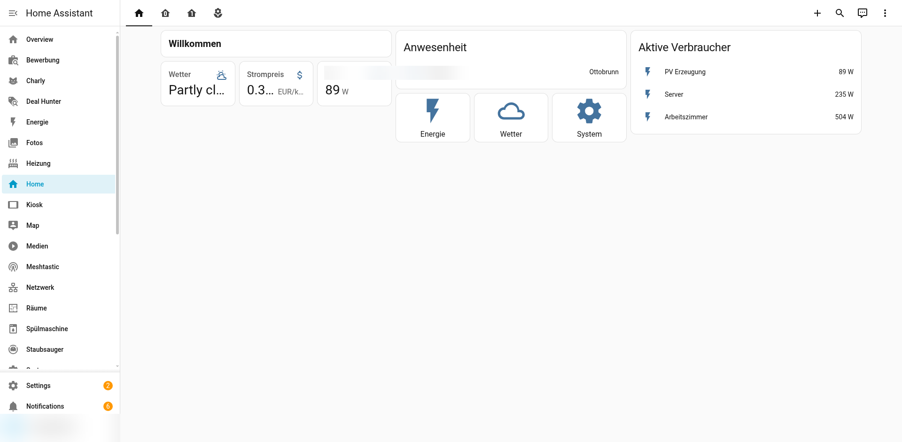
Home Dashboard - Zentrale Übersicht
2. Energie
Umfassendes Energiemonitoring mit Echtzeit-Verbrauchsdaten aller Tasmota-Sensoren (PV, Server, Trockner, Waschmaschine, Küche, Arbeitszimmer), Tibber-Strompreisen und Tages-/Wochen-/Monatsstatistiken.
Typische Karten: Echtzeit-Leistungsanzeigen, Strompreis-Graph, Tagesverbrauch-Verlauf, PV-Ertrag
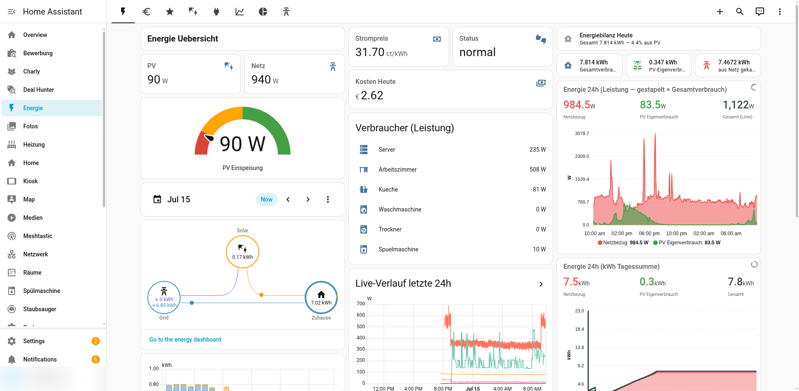
Energie Dashboard - Stromverbrauch und PV-Monitoring
3. Wetter
Wetterdaten vom Deutschen Wetterdienst (DWD) mit aktueller Temperatur, Niederschlagsradar, Vorhersage für die nächsten Tage und Wetterwarnungen.
Typische Karten: Wetter-Forecast, Niederschlagsdiagramm, Temperaturverlauf, Warnungen
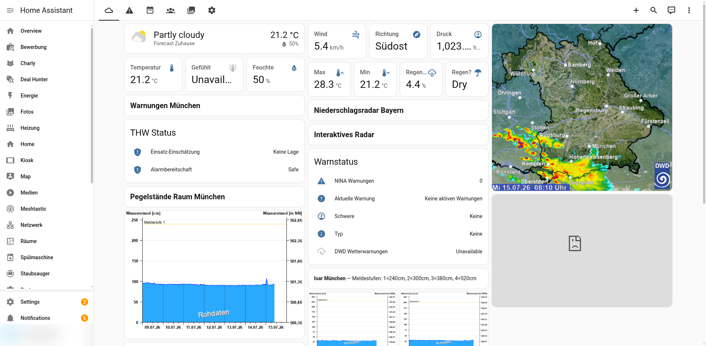
Wetter Dashboard - DWD Wetterdaten und Vorhersage
4. Räume
Raumweise Ansicht mit Temperatur, Luftfeuchtigkeit und aktiven Geräten pro Raum. Ermöglicht die schnelle Steuerung von Geräten in einem bestimmten Raum.
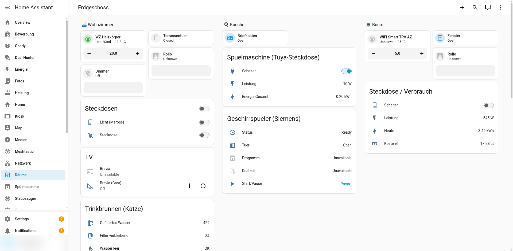
Räume Dashboard - Raumweise Geräteübersicht
5. Medien
Steuerung aller Mediengeräte: Amazon Echo Show 8, Sony Bravia TV, Musik-Wiedergabe. Enthält Media-Player-Karten mit Lautstärke, Wiedergabesteuerung und Quellenwahl.
Typische Karten: Mini Media Player, Media Control, TTS-Eingabe
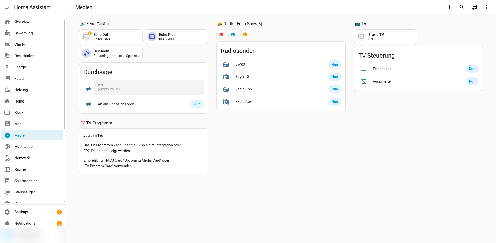
Medien Dashboard - Steuerung aller Mediengeräte
6. Staubsauger
Steuerung des Dreame Staubsaugerroboters mit Live-Karte (via Xiaomi Cloud Map Extractor), Reinigungsverlauf, Verbrauchsmaterialien-Status und Raum-Auswahl.
Typische Karten: Vacuum Map, Status-Entity, Raum-Buttons, Verbrauchsmaterialien
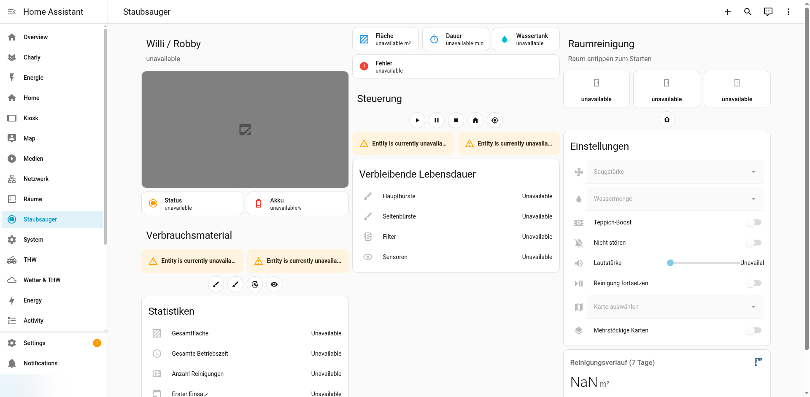
Staubsauger Dashboard - Dreame Roboter mit Live-Karte
7. System
System-Monitoring: Home-Assistant-Version, CPU/RAM-Auslastung, Festplattenspeicher, Datenbank-Größe, Addon-Status, Update-Verfügbarkeit und Log-Auszüge.
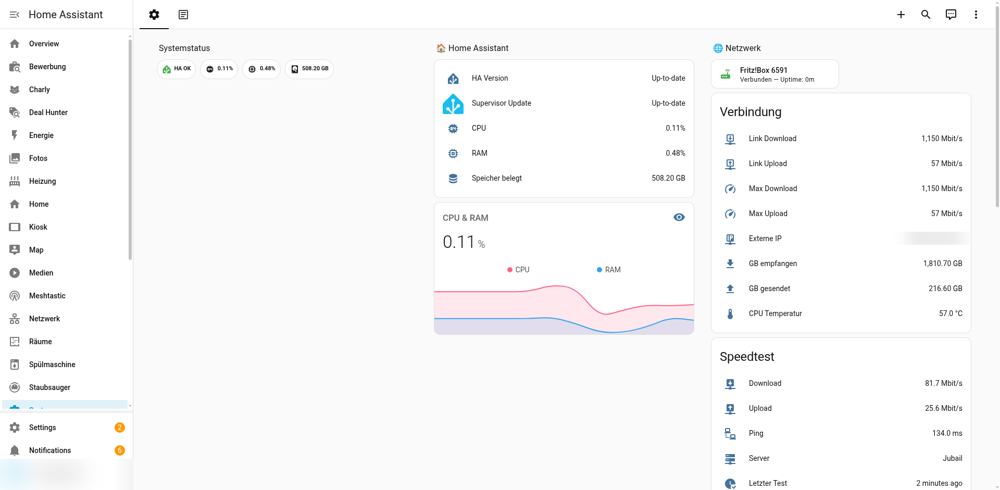
System Dashboard - Monitoring und Status
8. THW
Dashboard für das Technische Hilfswerk (THW): Aktuelle Divera-Alarme, NINA-Warnmeldungen, Einsatzübersicht und Verfügbarkeitsstatus.
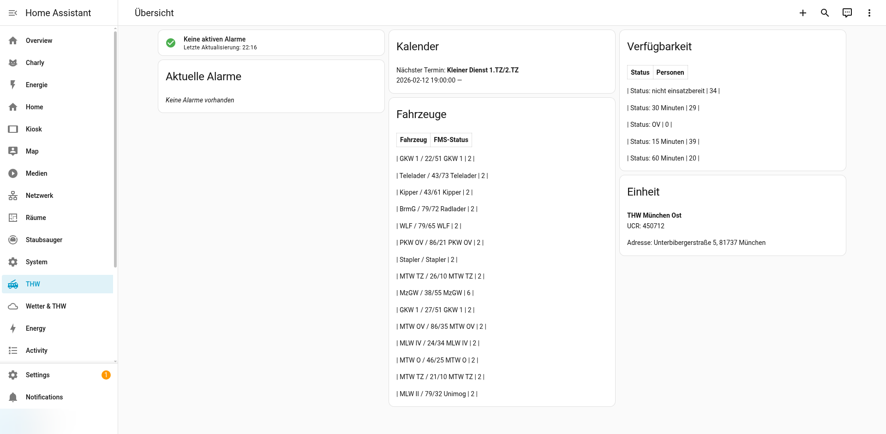
THW Dashboard - Alarme und Einsatzübersicht
9. Netzwerk
Netzwerk-Monitoring: UniFi Switch/AP-Status, verbundene Clients, Fritz!Box DSL-Statistiken, VPN-Verbindungen, Internet-Geschwindigkeit und Geräteerkennung.
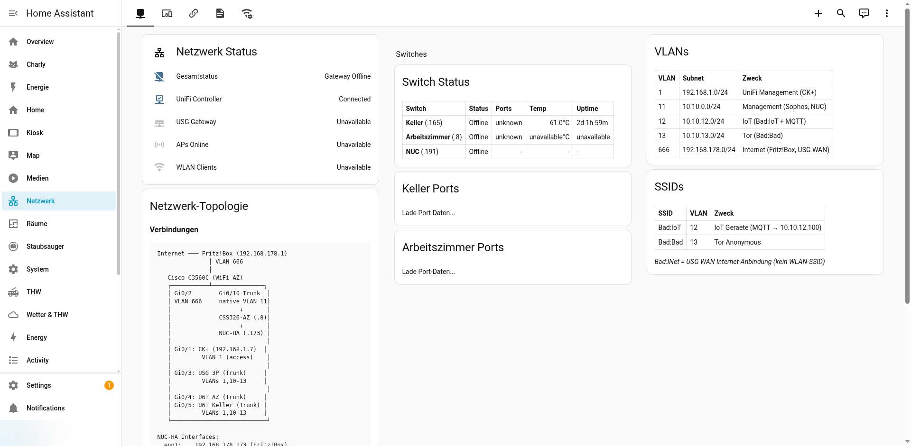
Netzwerk Dashboard - Switches, WLAN und Internetstatus
10. Charly
Spezialdashboard für die Katze Charly: PetKit-Futterautomat-Status, Fütterungsplan, Trinkbrunnen-Status und Aktivitätsübersicht.
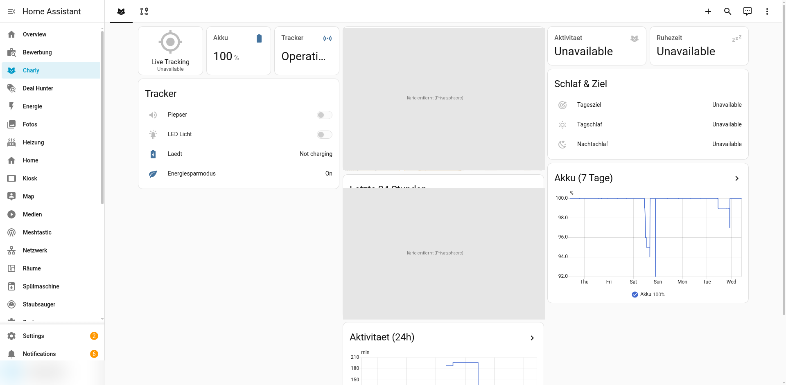
Charly Dashboard - Haustier-Tracking und PetKit
11. Kiosk
Vereinfachtes Dashboard für den Kiosk-Modus (z.B. auf einem Tablet an der Wand). Zeigt nur die wichtigsten Informationen ohne Navigationsleiste und mit größeren Touch-Zielen.
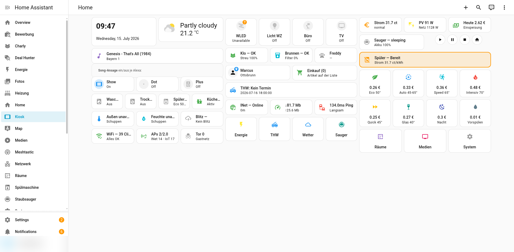
Kiosk Dashboard - Vereinfachte Tablet-Ansicht
Verwendete Kartentypen
| Kartentyp | Verwendung | Dashboard(s) |
|---|---|---|
entities |
Liste von Entitäten mit Status | Alle |
gauge |
Runde Anzeige für Zahlenwerte | Energie, System |
history-graph |
Zeitverlauf von Sensorwerten | Energie, Wetter |
weather-forecast |
Wettervorhersage-Karte | Wetter, Home |
media-control |
Media-Player-Steuerung | Medien |
map |
Kartenansicht für GPS-Tracker | Charly |
picture-elements |
Bild mit überlagerten Elementen | Staubsauger, Räume |
vertical-stack |
Vertikale Karten-Gruppierung | Alle |
horizontal-stack |
Horizontale Karten-Gruppierung | Alle |
conditional |
Bedingt angezeigte Karten | THW, System |
Beispiel: Einfache Dashboard-Datei
# dashboards/home.yaml - Beispiel-Struktur
title: Home
views:
- title: Übersicht
path: overview
icon: mdi:home
cards:
- type: weather-forecast
entity: weather.dwd_home
forecast_type: daily
- type: gauge
entity: sensor.pv_leistung
name: PV Leistung
min: 0
max: 5000
severity:
green: 1000
yellow: 500
red: 0
- type: entities
title: Geräte
entities:
- media_player.marcus_echo_show_8_2nd_gen
- media_player.sony_bravia_tv
- vacuum.dreame_staubsauger
- type: horizontal-stack
cards:
- type: button
entity: scene.abend
name: Abend
- type: button
entity: scene.film
name: Film